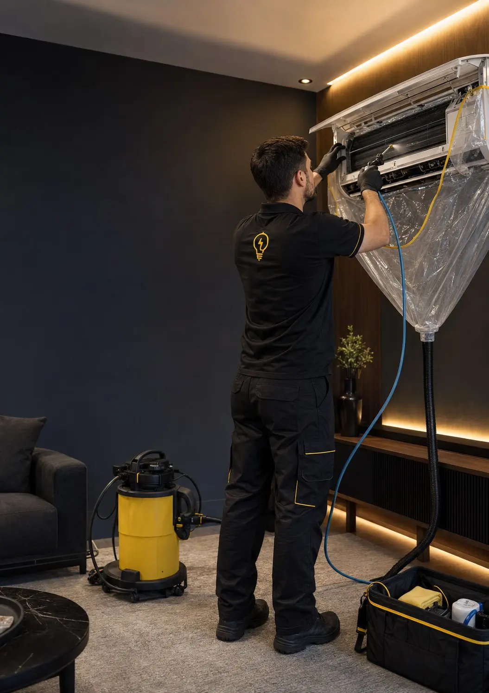
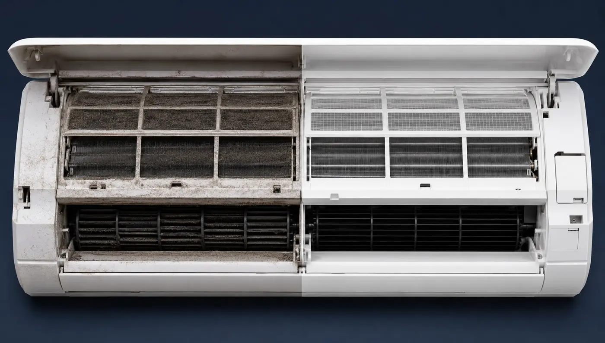

Conforto
Ajuda a reduzir odores, melhora a passagem de ar e deixa o ambiente mais agradável.
O ar-condicionado movimenta o ar do ambiente todos os dias. A higienização profissional ajuda a cuidar do equipamento, do conforto e da qualidade do ar percebida por quem utiliza o espaço.
Higienização preventiva • 1 vez ao ano
Ajuda a reduzir odores, melhora a passagem de ar e deixa o ambiente mais agradável.
Menos sujeira interna favorece a troca térmica e reduz esforço desnecessário do equipamento.
Reduz o acúmulo de poeira e resíduos na unidade e reforça o cuidado com o ar do ambiente.
A referência de 1 vez ao ano considera uso residencial comum. Uso intenso, poeira, umidade, pets ou pessoas alérgicas podem exigir intervalos menores após avaliação técnica.

Mesmo com o filtro lavado, a parte interna pode acumular poeira, resíduos e umidade em componentes que você não enxerga.
Lavar somente o filtro não é higienização completa. A limpeza profissional alcança componentes internos e finaliza com montagem e testes.
Poeira, umidade e mofo no ambiente podem irritar as vias respiratórias e agravar sintomas em pessoas sensíveis. A higienização faz parte do cuidado preventivo com o ambiente.
Espirros, nariz entupido ou escorrendo, coceira e irritação podem piorar quando há poeira e outros agentes no ambiente.
Mofo e umidade podem desencadear tosse, chiado e agravar crises de asma em pessoas sensíveis ou alérgicas.
Olhos, nariz, garganta e pulmões podem apresentar desconforto e irritação mesmo em algumas pessoas não alérgicas.
Crianças, idosos, pessoas com asma, alergias, doença pulmonar crônica ou baixa imunidade merecem cuidado especial.
Informativo: não substitui avaliação médica. Sintomas persistentes devem ser avaliados por profissional de saúde. Referências informativas utilizadas no folder: CDC - Mold and Health; EPA - Indoor Air Quality.
A Iluminar executa a higienização com proteção do ambiente, organização e verificação final do funcionamento.
Seu ambiente é entregue organizado, com orientação para a próxima manutenção preventiva.
Uma pequena rotina anual para cuidar do ar que circula no ambiente, do conforto e da vida útil do equipamento.
Cálculo aproximado: R$ 250,00 divididos por 365 dias.
Cálculo aproximado por aparelho: R$ 200,00 divididos por 365 dias.
Valores sujeitos às condições de acesso e avaliação técnica.
Agende a higienização preventiva do seu ar-condicionado.